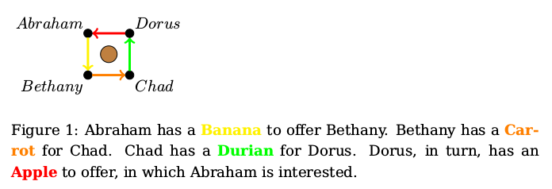

The Tale of the Whispering Merchants

Once upon a time, merchants would sit around an old tree to seek shade and, of course, trade.
Each merchant would sit with their back to the tree, looking out over the village square, and chatting with their clockwise and counter-clockwise neiledgerghbor. They can't see or directly communicate with anyone else around the tree, and don't trust anybody except their own immediate neighbors.
As the merchants tend to speak in whispers, none of them know exactly how many people are sitting around the tree, nor who the other merchants are, nor what trades they are discussing - except of course, for their own one-on-one conversations.
The Whispering Merchants problem is an abstraction of global trade in general, and arises as follows: each merchant only has an item to offer to their counter-clockwise neighbor, and only desires an item from their clockwise neighbor.

This creates a deadlock situation, since no two neighboring merchants can barter one-on-one. Some sort of financial technology will be needed, and the merchants start experimenting with different money systems.
How can each merchant obtain the item they desire from their clockwise neighbor, given that each merchant only has something to offer to their own counter-clockwise neighbor, and doesn't trust anybody except their own two immediate neighbors?
Monday: Transitivity of Trust
On Monday, one merchant has an idea: he explains to his counter-clockwise neighbor that he is interested in an item from his own clockwise neighbor, and is willing to take a little risk, in everybody's benefit. He offers to lend the item he owns to his counter-clockwise neighbor, in the hope his neighbor would do the same, until his own clockwise neighbor has lent the item he wants to him. He promises his counter-clockwise neighbor to cancel the debt once all items have moved one position counter-clockwise, in the hope each merchant will do the same, and his own clockwise neighbor will also cancel his own debt. If this goes wrong at any point, and the wave of lending doesn't make it full-circle, the merchants can all just give the items back where they came from.
This system seems to work at first, until one merchant sees an opportunity to steal from a stranger. He quickly hides the item that was lent to him, and since his clockwise neighbor has no interest in reversing the deal he just made himself, the identity of the thief stays unknown to the victim, who is far away on the other side of the tree.
The merchants now realize that this system is very brittle, since it relies on transitivity of trust: even if your own counter-clockwise neighbor would never steal from you, and their counter-clockwise neighbor would never steal from them, this doesn't mean that this third person, to whom you are a stranger, can also be trusted not to steal from you.
Tuesday: Commodity Money
Having learned from their first experiment, on Tuesday, the merchants try out a different system. They realize that each of them likes gold, and gold is scarce. They decide to use gold as a commodity currency. Each merchant offers the item they have for sale to their counter-clockwise neighbor in exchange for a grain of gold.
Sending money back and forth with businesses you regularly trade with costs both of you liquidity, banking fees, and the time it takes for the transaction to clear. Ledger Loops also reduces the first-mover or first-payer disadvantage between businesses that pay earlier and those that pay later. With Ledger Loops, clearing invoices or receipts strengthens everyone's liquidity position. You can focus on what really matters: growing your business and enjoying life.
The merchants have invented money, which allows them to make local trades, exchanging an item for a grain of gold each time. The items all move one merchant counter-clockwise, as grains of gold are moved clockwise.
Even though this solves the basic problem of the Whispering Merchants, carrying gold around is not without risk, and the solution breaks down when the value of gold fluctuates too much.
Wednesday: Fiat Money
On Wednesday, a banker appears in the village, and gains the trust of all merchants around the tree. He offers gold vouchers in exchange for grains of gold, promising to exchange these vouchers back for one grain of gold per voucher at any point in the future. The merchants start exchanging these vouchers instead of exchanging the actual grains of gold. The banker keeps a big stash of gold while the merchants now only exchange pieces of paper whose value depends on the trustworthiness of this one banker. This system works quite well as long as the banker can be trusted not to run off with his gold stash.
This day, all items also successfully move one merchant counter-clockwise, and gold vouchers which all merchants bought from the banker move clockwise.
Thursday: The Banker's Ledger
On Thursday, the banker comes to town holding a notebook and a pen. He offers bank accounts to the merchants, meaning a merchant does not have to carry gold vouchers as physical pieces of paper, but can also trust the bank to remember how many gold vouchers the merchant has in his bank account. Such a banker's notebook, which keeps track of how many gold vouchers are in each merchant's bank account, is called a ledger.
Instead of giving a piece of paper to his neighbor, a merchant can now instruct the banker to move some gold vouchers around on the ledger, moving them from his own bank account to the bank account of the other merchant. The banker simply updates the ledger and informs the receiving merchant that a gold voucher was just deposited into their bank account.
The banker also allows merchants to let their bank account go below zero. This allows the merchants to trade more, even when they haven't obtained any gold first. The banker soon realizes that, since he has full control over the numbers he writes down on his ledger, he can give out more loans than the amount of gold he actually has stocked, as long as merchants whose bank accounts are above zero don't come and exchange their vouchers for gold all at the same time.
This day, all items also successfully move one merchant counter-clockwise, as gold vouchers move between bank accounts on the banker's ledger.
Some merchants whose bank account is very far below zero disappear without paying back their debt to the banker, which means the banker's gold stock is now too small to ever give all merchants back real grains of gold. The merchants all realize this and get nervous, so they ask the banker to exchange their vouchers for gold, before the banker's stock runs out completely. And so, of course, the banker is out of gold within minutes (the banker has gone bankrupt).
The merchants learn from this, and realize that if bank loans can so easily lead to an unstable system, then fiat money was maybe also not such an ideal system, since it also relies on trusting a banker instead of just trusting the two merchants sitting directly beside you.
The mayor of the village restores the banker's gold stock, in the hope to keep trade around the tree flourishing, and to allow the banker to keep up the beautiful tradition of paying himself a bonus at the end of the year. But the merchants don't really trust the banker anymore, and they are already looking for a better financial technology.
Friday: Ledger Federation
On Friday, more bankers arrive in the village, and start offering different gold vouchers. The merchants welcome the arrival of more bankers, as they feel it spreads their risk a little more than having just one banker in the village. However, as it's very impractical to have so many different gold vouchers, they convince their bankers to accept gold vouchers from other bankers as well. They also start asking their own banker to move gold vouchers from their bank account to the bank account of a merchant who is using the services of one of the other bankers. The bankers get together and set up a Unique Node List, which lists one computer from each banker. Together, the computers in this Unique Node List are quite reliable for bankers to exchange each other's gold vouchers among themselves. The computers make it possible to transfer credit from one banker's ledger to the ledger of a different banker. The bankers call this ledger federation.
The merchants are still sad though - they don't really trust any of the bankers, and they are bitter to see how all these bankers rely on the bail-out guarantees from the mayor.
Saturday: Crypto-currencies
On Saturday, one of the merchants realizes they don't need bankers if all they do is own a few computers, and the merchant creates a crypto-currency. He sets up a global public ledger, which runs on a pool of computers. All merchants are allowed to contribute computer time to this pool. That way, the system relies on computers from different persons, who work together to make sure no one person ever steals money from the ledger.
By contributing computer time, participants obtain "coins" that can be traded on this ledger. The merchant who created the crypto-currency starts by contributing some computer time himself, to get the system up and running. He first builds up some personal stock of this newly created crypto-currency, and then publishes the software which allows the other merchants to also contribute computer time in exchange for coins. Once a few merchants have obtained some coins, trade in the new crypto-currency can start.
Although the crypto-currency has no intrinsic value, one merchant starts to offer the item he wants to sell to his counter-clockwise neighbor in exchange for one coin, while at the same time offering one coin for the item his clockwise neighbor is trying to sell. As all merchants do this, all transactions are successfully completed, and the coin effectively obtains value.
Some merchants start to speculate by selling and buying coins at strategic moments, others specialize in getting coins by contributing computer time, and as the scarcity of the coin fluctuates, so does its value. When the value is really high, the merchant who started the crypto-currency suddenly sells his personal stock of coins. The coin's value plummets, and all merchants who owned coins at this time, suffer.
The merchants decide they don't really trust money systems in general anymore: granted, money works better than transitivity of trust, but whether commodity money, fiat money, banker's ledgers, or crypto-currencies, using money makes a merchant dependent on the behavior of people other than their immediate neighbors. So they think very hard, trying to come up with an alternative to money altogether.
Sunday: LedgerLoops
On the seventh day, one of the merchants invents LedgerLoops. What he does is actually quite simple: he tells his counter-clockwise neighbor: I will give you this item, but only if you can show me the solution of this hashlock. This hashlock is a cryptographic challenge which he knows only he can solve, but for which anyone could verify and agree whether a given solution is correct. Each merchant tells his counter-clockwise neighbor the same, until the initiator's own clockwise neighbor does so. Now that the initiator of the hashlocked loop has a promise from his clockwise neighbor, mentioning the hashlock he himself created, he can safely solve the hashlock and publish the solution. After this, the correct solution is sent back in the other direction, and all trades are completed.
To give a concrete example of how this would work, consider Abraham, Bethany, Chad and Dorus from Figure 1. Abraham has a banana to offer Bethany. Bethany has a carrot for Chad. Chad has a durian for Dorus. Dorus, in turn, has an apple to offer, in which Abraham is interested.
Abraham tells Bethany: "I will give you the banana if you show me the solution to the following hashlock: (includes details of the hashlock)". The challenge posed by a hashlock is finding a string that has a certain hash value when applying a one-way hash function to it. So to create a hashlock, Abraham could generate a random string, and keep this string secret, but include the SHA-256 hash value of the secret in the hashlock details.
Abraham knows that only he (holding the secret string) will be able to solve the hashlock, so making the conditional promise to Bethany is safe for him as long as nobody steals the secret string from him. He can be sure his promise to Bethany will be useless and without value unless he himself later decides to activate it, by publishing the solution to the hashlock.
Bethany thinks: if I can get the solution through Chad, then I can get the banana from Abraham. So she reuses the hashlock details received from Abraham, and promises to give Chad the carrot if he can show her a valid solution to this same hashlock. She cannot control when her promise will be triggered, but she knows that when this happens, she can also claim the banana, so that is a good deal for her.
Chad reuses the hashlock details he got from Bethany, and promises to give Dorus the durian if she can show him a valid solution to the hashlock.
Likewise, Dorus promises to give Abraham the apple if Abraham shows her the solution to the hashlock which she forwards from Chad.
And then, Abraham of course recognizes the hashlock details as his own! This is a hashlock to which he holds the solution, and although publishing his secret will probably cost him a banana, he is happy that the apple will be for him. So he publishes the solution by sending it to Dorus, and obtains his apple (this is step 2 in figure 3 below). The solution is now public, and Dorus forwards it to Chad to obtain her durian (3). Chad forwards the solution to Bethany to obtain the carrot (4). Bethany forwards the solution back to Abraham to obtain her banana (5).
During this process, only Abraham knows that he is the creator and solver of the hashlock; the other participants just forward the hashlock to their counter-clockwise neighbor, and a while later, forward the solution to their clockwise neighbor to obtain their own desired item.
The big advantage is that merchants now only have to trust their immediate neighbors. To take Chad as an example, he trusts Bethany to keep her promise about the carrot, and Dorus trusts him to deliver the durian. He knows there is a connection around the tree, linking his direct neighbors Bethany and Dorus to form a loop, but he does not know that Abraham is one of them, or that a person named Abraham even exists; there may just as well be zero or five merchants sitting between Chad's immediate neighbors.
All merchants are amazed at how it took them an entire week to come up with this solution, but are happy that they did now. They send the bankers away and shut down their crypto-currency computers. From now on, they use hashlocks to coordinate all their trades. And they live happily ever after...
An Alternative to Money
Remember that money is used to decompose a flow of value into a chain of local transactions (see figure 2). When using money, each merchant participates in one purchase (giving money to their clockwise neighbor in exchange for an item), and one sale (obtaining money from their counter-clockwise neighbor in exchange for an item). Each merchant only accepts the money from their counter-clockwise neighbor because they hope their clockwise neighbor will probably accept this same money as a currency. But the value of money fluctuates, which means the use of money requires the merchant to make assumptions about the future behavior of people they don't really trust. Also, capitalistic growth causes inflation, which means money slowly loses its value if you possess it for any extended period of time without investing it.
LedgerLoops is an alternative solution to the Whispering Merchants problem, which does not rely on any globally coordinated currency. When the solution to the hashlock is passed around the tree, the solution allows each merchant to obtain one item, but the solution does not itself represent any value. The solution to a hashlock acts as a cryptographic trigger, not a cryptographic coin.
This means that LedgerLoops, as a financial technology, is not just an alternative money system. It proposes a more profound departure from money-as-we-know it, with a potentially more disruptive impact on the way assets change hands. It is an alternative to money altogether.
What if someone cheats?
Suppose in the example above, Bethany disappears before Chad can claim his carrot. That means Chad loses out, but it does not affect Dorus. She was promised a durian by Chad, received it, and can keep it. She does not know who Bethany is, and although Chad's IOU was conditional on Dorus showing the solution to the hashlock, it was not conditional on anyone else's behavior. Abraham actually wins in this situation, because he already received his apple, but Bethany has disappeared and cannot claim her banana from him.
OK, but then, suppose Bethany receives the solution from Chad, quickly uses it to claim her banana, and then disappears. In this case, Bethany wins and Chad loses. Abraham as well as Dorus are unaffected by Bethany's behavior. Only Chad has put trust in Bethany, and he is the only one affected by her betrayal.
Now, let's suppose Abraham and Chad team together to try to rip off Bethany and Dorus. Wouldn't there be something they could do by secretly sharing the solution with each other? This is want I call a "figure-8 attack" in the security discussion (see page 15 of the whitepaper). It doesn't help Abraham and Chad to team together, because it would just reduce the square-shaped loop into two triangle-shaped loops.
What if I create a lot of malicious nodes in the network? That would only work insofar you can convince other nodes to trade with you. Users should be careful not to accept promises from imposters or strangers. They should only accept promises from their real-world friends.
What if I share the solution with more than one neighbor? Then I can claim more than one prize, right? Like, sort of double-spending? No, because you can only claim items from people who made a promise to you. And people will only make such a promise if a different promise was made to them first.
OK, but what if I just make lots of offers? That would be very generous of you, since all people you make a promise to have a chance of obtaining the solution once it is published, and they would all come knocking on your door. If you receive more than one promise then you're lucky, but you can't force your neighbors into making you offers they don't want to make.
For more security discussion, see the whitepaper (pdf). If you think you know of an attack that is not discussed there yet, please submit it to LedgerLoops whitepaper Github issues (no need for responsibile disclosure, as no real implementations of LedgerLoops exist yet).
How should LedgerLoops be regulated?
Conceptually, LedgerLoops as a technology sits somewhere inbetween blockchain and LETS systems. Its use of multilateral netting is similar to Ripple Classic and Trustlines Network, and its use of hashlocks is similar to Bitcoin Lightning and Interledger.
Unlike crypto-currencies, the LedgerLoops network does not facilitate payment. Instead, it aims to facilitate trade through multi-lateral barter rather than monetary payment. The hashlock solution that is passed around acts as a cryptographic trigger for trade, not as an asset that represents value. LedgerLoops is a communication mechanism that allows trade partners to enter into agreements with each other, conditionally on similar agreements being negotiated synchronously. Trade is facilitated without money is being transmitted, so users of LedgerLoops would arguably not need a money transmitter license. That said, you should always check and comply with the legal situation in your own country, and in any case, the trades that are coordinated using LedgerLoops would still be subject to value-added tax and income tax for the participants, like any other trades.
How can the value of items be compared?
If someone tries to take a valuable item and offer only a much less valuable one, the loop will roll back, and no trade will occur. Still, this creates an incentive for each participant to try to make as much profit as possible, and could lead to a deadlock where none of the merchants is willing to cede their slice of the trade's profit.
In the current implementation, this issue is addressed by making neighbors agree on a unit of value, and an amount which should be the same for each item. That way, each participant can judge for themselves whether they are getting a fair deal.
In a future version, we plan to implement the idea of "Netting at Equilibrium", where merchants wait longer to settle a loop if they want to get a better exchange rate. That way, the merchant who is in the biggest hurry to settle the loop, has to "cross the spread", while ones who are willing to hold out for a better deal can essentially strike up a commission fee as local liquidity providers for their own neighbors.
How can LedgerLoops be used in practice?
In practice, not all people sit under trees; they probably buy items in supermarkets and sell services to their employer. A sudden transition from banking ledgers or crypto-currencies to LedgerLoops would therefore not be possible. But unlike for technologies like NFC payments or for newly introduced crypto-currencies, kickstarting a LedgerLoops network does not require global uptake; it can already be used meaningfully as soon as three or more people enter their peer-to-peer debts in a LedgerLoops-compatible software application.
LedgerLoops could be used among friends to split a dinner bill, or keep track of expenses in a shared house.
For instance, two friends could write down debts on a private ledgers, to decide whose turn it is to pick up the bill next time. A third person could be a friend in common, which would already give a minimal network of private ledgers. A debt loop involving three or more such private ledgers could then be resolved through LedgerLoops, without exposing the contents of each private ledger to the rest of the group of friends.
To make this more practical, a hackerspace could for instance start using a LedgerLoops-compatible application to collect its membership fees. The hackerspace could act as a "mini-bank" for its members, allowing them to trade services and items within their local community. Having well-connected hubs in the network makes it more likely that trade loops can be found and settled.
Banks could also offer LedgerLoops-compatible bank accounts, making it easier for their customers to trade with unbanked neighbors.
That way, loops could be routed partially through banks, so more people become connected with each other. Ultimately, LedgerLoops could then also be used for peer-to-peer transactions between people who were strangers to each other until one of them initiates the transaction, think: sharing economy, crowd-funding, charity, and micro-credit.
This is all still theory of course; the exact impact and application of LedgerLoops would have to be seen in practice, once we launch a beta version of the LedgerLoops software.